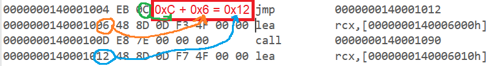

jmp will unconditionally change RIP to a given address (jump to address)
online info
the address can be specified in sevral ways:
short
relative - short- RIP = RIP of next instruction + 1 byte displacement (sign extended to 64 bits)
1 byte (8 bits) displacement allows moving from -128 to 127 (decimal) places from the next instruction
the short jump is calculated from the next instruction
in this example, the IP is at 1004, jump is calculated from the next instruction - 1006, there we add 0xC to get 0x12

jmp -2 - will cause an infinite loop (FE = -2 decimal)

near
near - relative- RIP = RIP of next instruction + 4 byte (sign extended to 64 bits) displacement
4 byte displacement allow values of -2,147,483,648 to 2,147,483,647
near, absolute indirect - address calculated via r/mX (x = 16/32/64)
there is far, absolute indirect jump, to be covered (involves segment registers)